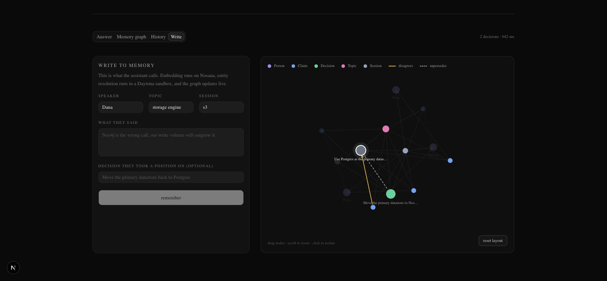
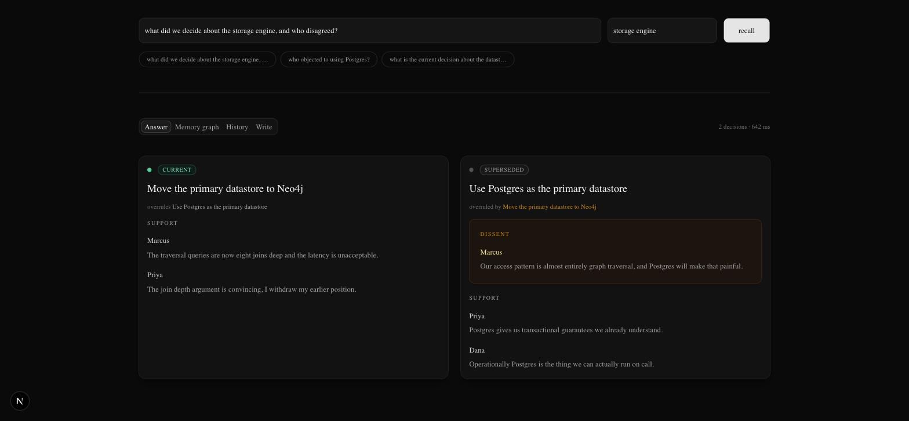
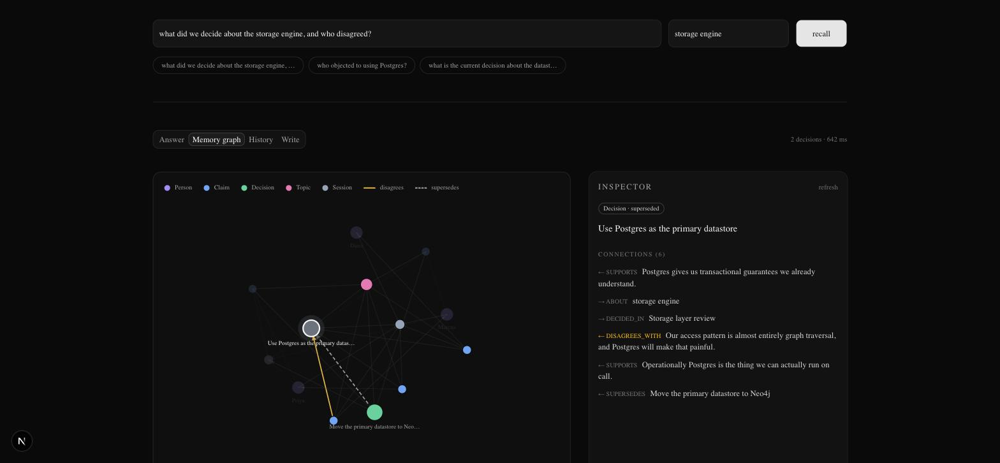

Model Context Protocol · Knowledge graph memory
mnemex
v0.1.0Persistent memory for AI assistants, stored as a Neo4j knowledge graph instead of a flat chunk index. Claims, the people who made them, and the decisions that supersede each other are all first-class nodes and edges.
The problem
Vector RAG remembers text.
It forgets structure.
Chop the transcript, embed the chunks, return the nearest neighbours. That answers “what was said about X” and fails at everything built on relationships.
Who held which position
A chunk containing an objection does not record who made it. Attribution dies the moment the text is flattened.
What is still true
A reversed decision and the decision that reversed it are two similar chunks. Search returns both, with no signal which survived.
How things connect
“What did we decide, and who disagreed” is a two-hop traversal. No amount of top-k tuning turns it into one.
The failure is not retrieval quality. The storage format threw the relationships away before retrieval ever ran.
The idea
Store the argument, not the transcript.
Every one of those labels is a real edge in Neo4j. Recall is a graph traversal seeded by a vector search, not a similarity ranking on its own.
What it does
Four tools over stdio. One config entry.
remember
One speaker turn: session, speaker, claims, topic, and the stance taken on a decision. Resolves the person, deduplicates restated claims, detects supersession, commits atomically.
recall
A natural-language question. Returns each decision with its status, everyone who supported or objected, the claim each made, and the supersession chain both ways.
timeline
Takes a topic. Returns its decision history in order, showing what superseded what and who dissented at each step.
analyze
Assistant-authored Cypher for the questions the fixed traversals miss. Read-only, executed inside a sandbox whose egress reaches nothing but the database.
// the assistant supplies structure; mnemex does not scrape it from raw transcripts remember({ sessionId: "s1", speaker: "Marcus", topic: "storage engine", claims: ["Our access pattern is almost entirely graph traversal."], decision: { statement: "Use Postgres as the primary datastore", stance: "disagrees" } })
Every response carries a degraded array. Empty on the happy path, otherwise it names the subsystem running on a fallback.
Graph schema
Five node labels. Eight kinds of edge.
status ∈ { current, superseded, open }
Two cosine vector indexes, claim_embedding and decision_embedding, at 768 dimensions. Five uniqueness constraints. All of it created by one bootstrap script.
Write path
Untrusted text never plans its own merge.

Live write, graph updates in place
A claim only merges into an existing one at cosine 0.97 or above. The threshold is deliberately conservative: duplicate nodes are recoverable, a wrong merge attributes an argument to the wrong person.
Read path
The vector index finds where to start. Cypher collects the answer.
The question is embedded once, then queried against both vector indexes. This picks the entry points, and nothing more.
From each seed, Cypher walks out to every claim that supports or opposes the decision, to the person behind each claim, and along the supersession chain in both directions.
Decisions that still stand sort first. What is currently true is what the caller asked for.

One question · current, superseded, and the named dissenter
Live memory
Click a node, get its typed connections.

Technology
Four platforms, each on the critical path.
Neo4j Aura
Nodes, edges and both vector indexes. Reached through the official driver with lossless integers disabled and a ten-second connection ceiling.
BGE-base-en-v1.5
Served by vLLM on a decentralised GPU market over an OpenAI-compatible route. The identical checkpoint runs locally through ONNX when the endpoint is gone.
Qwen2.5-7B-Instruct
The assistant itself, on an A6000, with automatic tool choice and the Hermes tool-call parser. It is the thing calling mnemex, so the whole loop runs on rented GPU.
Daytona
A disposable sandbox on both paths: the merge planner on write, and assistant-authored Cypher on read, egress-limited to the database host alone.
MCP SDK
Four tools over a stdio transport. The Zod schemas are the tool contract and the runtime validation at once, so the two cannot drift apart.
Next.js 16 · React 19
Route handlers import the compiled package rather than reimplementing it, so the page exercises the MCP code path. Graph drawn with d3-force.
TypeScript in strict mode throughout. Zod validates every boundary. The golden suite runs end to end against a live Aura instance, not a mock.
Build status
Two of five agents in. Both landed working infrastructure, not scaffolding.
analyze is live
A real analytical query ran generated Cypher inside a Daytona sandbox against a read-only credential, with nothing degraded. Writes are refused in under half a second, without ever creating a sandbox. All four tools are registered.
Analyze was given its own timeout, separate from the write path: it has no fallback by design, so waiting out a slow sandbox is the only useful response, where a write should degrade in process quickly.
// the full stance breakdown, per person. // no fixed traversal returns this shape. Priya SUPPORTS 2 Marcus DISAGREES_WITH 1 Dana SUPPORTS 1 Marcus SUPPORTS 1
the chat model is live
Qwen2.5-7B-Instruct, with tool calling verified rather than assumed. It returned a well-formed tool call for recall with parseable arguments, and named the dissenter correctly when the result was fed back.
Three agents still running: the AgentCanvas chat UI, the graph selection bug, and the UI gap audit.
Failure modes and setup
Nothing remote is allowed to hang the assistant.
# set up git clone https://github.com/Sizbei/mnemex.git npm install && cp .env.example .env npm run bootstrap # constraints + vector indexes npm run build # see it work npm run seed -- --reset npm run demo # deploy the model, then wire the assistant up npm run deploy:chat claude mcp add mnemex -- node "$(pwd)/dist/src/server.js"
Pass the environment in the MCP config: the client launches the server from an arbitrary directory.